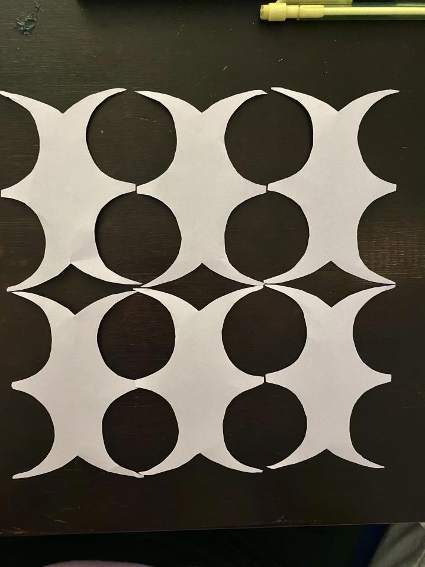

Phase 1 scissor cut outs
Mengshi Tamaki Steven Noor

Phase 2
Mengshi Tamaki Steven Noor


Phase 4
Mengshi Tamaki Steven Noor


Mengshi Tamaki Steven Noor
Mengshi Tamaki Steven Noor
Mengshi Tamaki Steven Noor


Mengshi Tamaki Steven Noor
At the beginning of this project, our goal was to finish our project with paper. In the beginning, my group members (Tamaki, Noor, Steven) and I tried to design different shapes with triangles and tried assembly in Illustrator. Later, we found that tessellation through virtual space was more difficult than it actually was. After trying the first virtual tessellations, we began to look for fastening designs that suited us. After Tamaki suggested using the "finger" fastening design, Tamaki, Noor, Steven and I all presented different solutions and started our first Laser Cut test. We selected 11"x17" Cardstock and Foam mat as our materials for the test 1. Tests showed that the Cardstock was better than Foam mat. However, we wanted to build the shape up. Obviously, the cardstock is not enough to support all the weight. It's too fragile. After the consulation between us, I initiated the attempt at plywood. Because we changed the material, the previous fastening design did not support and tighten our shapes very well. Then, I designed a "flower" with slots and added slots to other designs. After a second try, our fastening design worked. The "flower "fits perfectly into the other shapes.
On the theme, I proposed to do "lantern" theme. Because our group's idea was to make a 3D solid shape, the best way I can think of to use "flowers" is a lantern because lanterns have an infinite number of possibilities and combinations. After discussion, our group all agreed with my idea and started our own design.
Noor designed the "lantern" holder and handle; Tamaki, Steven designed silhouettes in different styles, shapes; I added more slots to the original "flower" design and made my unique silhouettes. After the Laser Cut, we combined all the pieces into the conceptual "lantern" seen above. This "lantern" can be combined in different ways, and we've only shown one.
I think our project has achieved the results I expected. However, there have some issuses exist —— Because of the defects in slot, many pieces cannot fit perfectly. I concluded the reason: 1. Probably our original slots didn't fit perfectly or we applied paint so thick that it thickened the plywood itself. 2. It may be that the slots themselves are not designed in a precise way that the shapes are cut out don't fit together.
What we need to improve: 1. Design more precise slots. 2. Considering the thickness of the paint, can it be changed to spray paint? 3. The shape needs to be designed to support, because in the combination process, the upper part cannot be well balanced and the supporting shapes need to be designed. 4.I did not have the pieces on my hand and we did not get a good documentation picture. We need to improve it.
Throughout the project, I communicated well with the group and cooperated with the creation: 1. I proposed the final theme of the project and the application of materials; 2. I created the slot to connect our shapes; 3. I designed the shapes of four different patterns and the wheel; 4. I involved in assemble and gave initial ideas for the video. 5. I helped the video setting. 6. I actively participated in every design process.